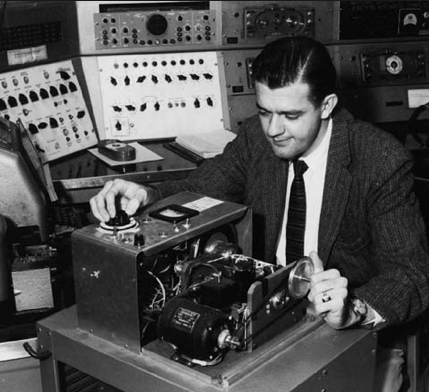
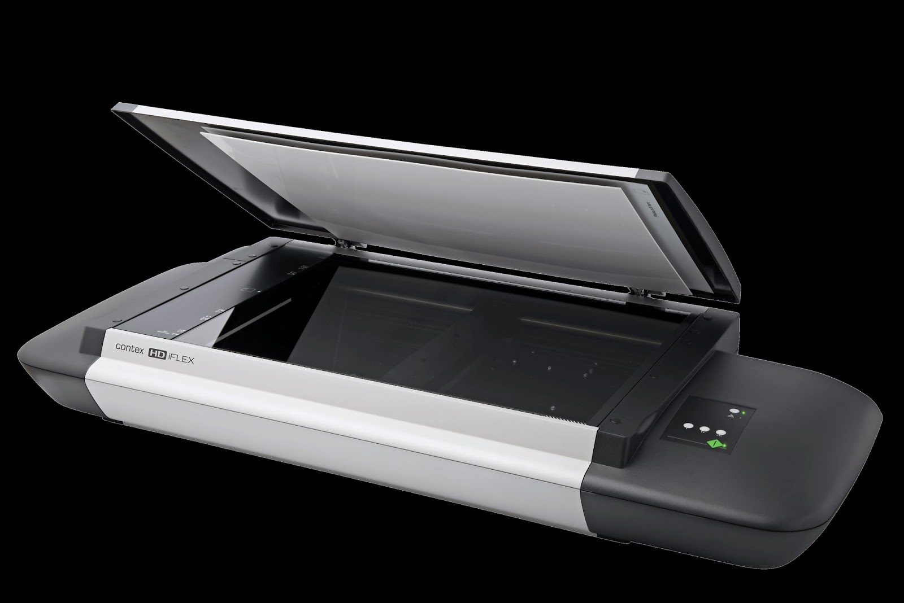
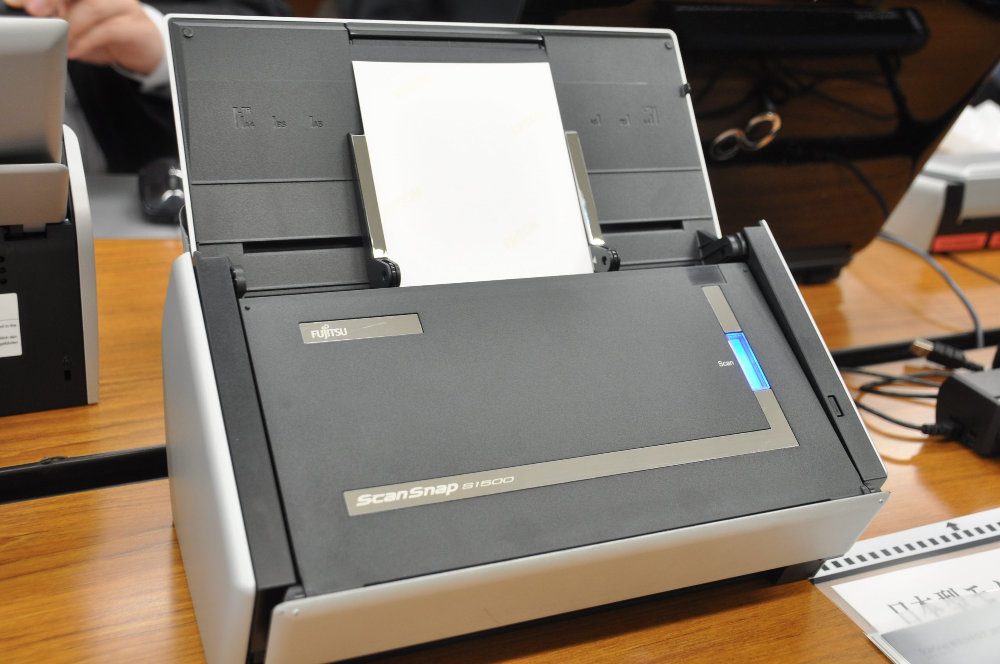

Definición.
El escáner es un dispositivo o periférico de computadora que ha sido diseñado para digitalizar una imagen impresa para transferirla a nuestra computadora con el fin de procesarla a través de programas como Photoshop o GIMP, o incluirla en algún proyecto de diseño gráfico o documento de otro tipo.
Mediante el escáner estaremos en posición de realizar tareas que de otra manera serían poco prácticas o que demandaría mucho trabajo, tales como el reconocimiento de textos mediante el OCR, o la obtención de imágenes de elementos específicos, los que no podemos encontrar en Internet.
Historia.
El origen del escáner de computadora u ordenador se remonta al año 1984, cuando Microteck creó el primer escáner para Apple Macintoch. El equipo, denominado MS-200 se caracterizó por su sencillez, dado que sólo digitalizaba en blanco y negro. A partir de este descubrimiento, se fueron creando modelos cada vez con mejores prestaciones, resoluciones y con la integración del color.
Este primer equipo tenía una resolución de 200 puntos por pulgada (dpi), pero en 1985 se aumenta a los 300 dpi y en 1988 ya se alcanzan los 800 dpi.
En el año 1989 aparece el primer escáner de ordenador a color, con una resolución de 300dpi a 24 bits de color, dos años después el escáner se incorpora al mundo de la fotografía y se elabora el primer escáner de negativos fotográficos de 35 mm.
Pero no será hasta el año 1994 cuando surja el primer escáner capaz de recoger los 32 bits de color y tener un escaneado con 600 dpi.
Gracias al escaneo digital por ordenador, es posible corregir los defectos de los documentos, retocarlos, recortar sólo áreas específicas o digitalizar el texto con técnicas de OCR.
Actualmente, los escáneres, además de comercializarse de forma independiente, suelen incluirse en impresoras, en las, especialmente adecuadas para oficinas.

Funcionamiento del Escaner
Un escáner funciona mediante luz, es decir que el dispositivo proyecta luz sobre la imagen que debe tomar y luego la recorre leyendo línea por línea lo que está impreso en ella mediante
sensores del tipo CCD o CID, analizando cada pixel y asignándole un valor, que luego se utilizará para enviarse a la computadora para que la procese y convierta en una imagen que podamos utilizar.
El modo que tienen los escáneres para comunicarse con la PC es a través de la llamada interfaz siendo hace algunos años SCSI y puerto paralelo las principales vías de conexión.
A través de este medio de comunicación el escáner envía a la PC, específicamente al software que está comunicado con el dispositivo, la información necesaria para reconstruir la imagen
en la pantalla, y que incluyen los tres parámetros más importantes, la profundidad del color, la resolución y la densidad. Estos tres elementos en conjunto determinan la calidad del
resultado final del escaneado, es decir de la imagen “levantada” por el escáner.
Tipos de Escaner
En la actualidad, los escáneres básicos, es decir aquellos que podemos utilizar en la oficina o en el hogar, son en general del tipo de cama, también llamados “Planos”
y vienen equipados con conexión USBy una resolución no superior a los 4800 DPI, si bien estos son interpolados, es decir una combinación de óptica y software. Sin embargo, esta resolución es adecuada a la mayoría de los trabajos que se realizan en estos ámbitos. Este tipo de escáneres de cama o planos pueden llegar a tener la capacidad para escanear documentos hasta el formato Oficio.
Escáneres de mano:
Los cuales y de acuerdo a su nombre deben ser utilizados en forma manual, Sin embargo, pueden llegar a ser muy útiles para cuando necesitamos escanear documentos y no podemos acceder a algo de mejor calidad.
También existen otros tipos de escáneres como los escáneres de tambor, utilizados en las artes gráficas, y que ofrecen valores de resolución y tamaño extremadamente altos, aptos para este tipo de actividad.
Escáner rotativo (o de tambor):
Muy utilizados en estudios de diseño gráfico o artístico, debido principalmente a su gran resolución óptica, son de gran tamaño y permiten escaneos por modelos de color CYMK o RGB.
Aplicación de escáner:
Las cámaras de resolución superior instaladas en algunos teléfonos inteligentes pueden escanear documentos de calidad razonable mediante la captura de una foto con la cámara del teléfono y procesarla posteriormente con una aplicación de escaneo, ya sea para emblanquecer el fondo de una página, corregir la distorsión de la perspectiva a fin de arreglar la forma rectangular del documento, convertir a blanco y negro, etc. Algunas aplicaciones pueden escanear documentos de varias páginas con exposiciones de cámara de manera sucesiva y generar un documento de archivo único o archivos de varias páginas.

¿Que es el escaneo?
El escaneado de documentos es distinto al de imágenes, aunque use algunas técnicas de este último. Aunque el escaneado de documentos puede hacerse en escáneres de uso general, la mayoría de la vez se realiza en escáneres especiales dedicados a este propósito, fabricados por Canon, Fujitsu o Kodak entre otros. Los escáneres de documentos tienen bandejas de alimentación mayores a las de fotocopiadoras o escáneres normales.
Normalmente escanean a resolución inferior que los escáneres normales, de 150 ppp a 300 ppp, así evita ficheros de tamaño excesivo.
El escaneado se hace en escala de grises, aunque cabe la posibilidad de hacerlo en color. La mayoría son capaces de digitalizar a doble cara a velocidad máxima (de 20 a 150 páginas por minuto). Los más sofisticados llevan incorporado algún firmware que “limpia” el escaneo eliminando marcas accidentales. Normalmente se comprimen los datos escaneados al vuelo.
La mayoría de documentos escaneados se convierten en ficheros editables usando la tecnología OCR. Mediante los drivers ISIS y TWAIN se escanea el documento a formato, para pasar las páginas escaneadas a un procesador de texto, que almacena el fichero correspondiente.
El escaneado de libros implica dificultades técnicas adicionales. Algunos fabricantes han desarrollado escáneres especiales para este cometido incluso haciendo uso de robots especiales encargados de pasar las páginas.

Resultados o datos de salida.
Al escanear se obtiene como resultado una imagen RGB no comprimida que puede transferirse a la computadora. Algunos escáneres comprimen y limpian la imagen usando algún tipo de embebido. Una vez se tiene la imagen en la computadora, se puede procesar con algún programa de tratamiento de imágenes como Photoshop, Paint Shop Pro o GIMP y se puede guardar en cualquier unidad de almacenamiento como el disco duro.